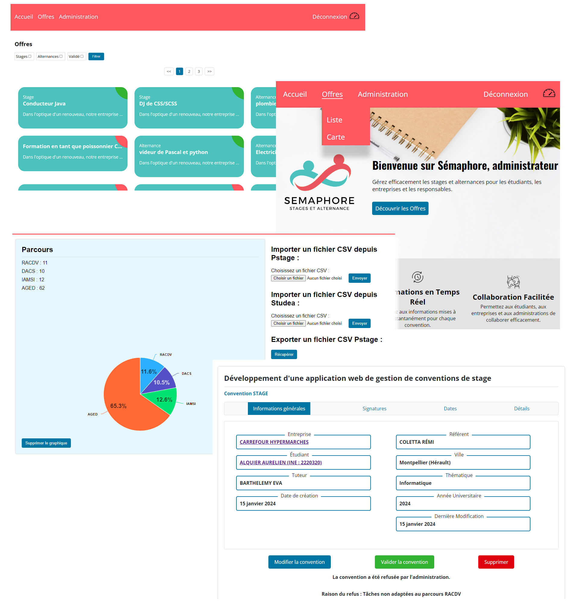

Sémaphore - Internship and Apprenticeship Management Platform (Second-Year Bachelor's Project)
- Skills used: Web development, HTML, CSS, JavaScript, PHP, Databases, SQL, PL/SQL, software quality practices (version control, Git), cybersecurity basics (SQL injection, HTML injection), Agile project management (Scrum), software design methods (UML).
- Link: Live website
Development of a web application for managing internships and apprenticeship placements for the Computer Science Department of the University Institute of Technology of Montpellier.
Sémaphore is a group project I worked on during the second year of my Bachelor's degree in Computer Science. It is a full-featured web platform designed to simplify the management of internships and apprenticeship contracts for students, companies, internship supervisors, and administrative staff. The main objective was to automate existing manual processes, improve efficiency, and provide a smooth user experience.
Key Features:
Job posting management: Companies can submit internship or apprenticeship offers, specifying the type of position (internship, apprenticeship, or both), company details, compensation, and other relevant information.
Agreement management: Internship coordinators and administrative staff can track and manage internship and apprenticeship agreements, including validation, editing, and access to student, company, and placement details.
Offer notifications: Students can subscribe to receive notifications when new opportunities matching their criteria become available.
Working in a team of five, we distributed tasks using the Scrum agile methodology. I contributed to most parts of the platform, both on the front end and the back end.
